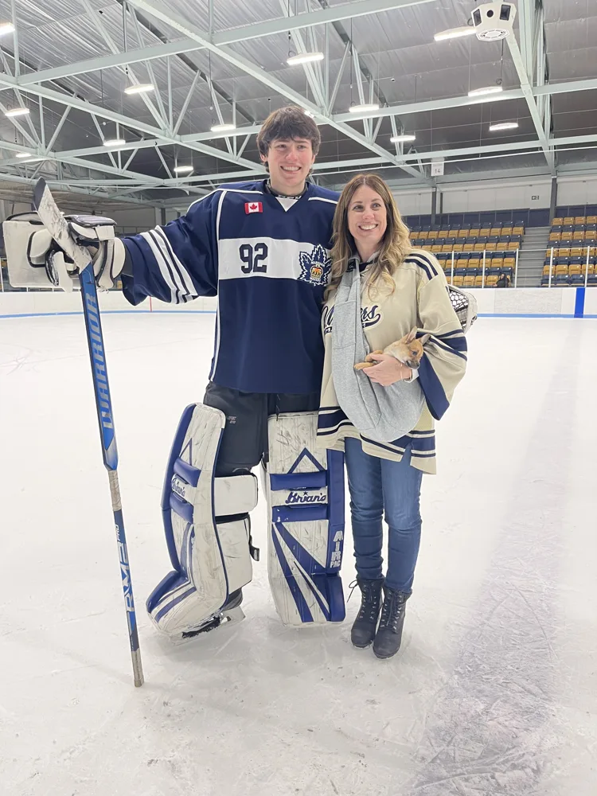

Western University
Software Engineering
Western Developers Society · Frontend Team
Western Investment Club · Researcher
I’m Tristan, a Software Engineering student at Western University. Code is one part of the story.

That might be a website a team can update themselves, a playlist someone actually wants to listen to, or a game with a boss worth beating. My projects have taken me through frontend interfaces, Python backends, browser-based AI, and Unity.
I’m also Co-Founder and CTO at RoleColorFinder. My work there spans technical direction, architecture, and conversations with early users about what the product should become.
As an Assistant Project Manager at Konstruct21, I worked with timelines, budgets, teams, and vendors. That experience gave me a practical appreciation for scope and communication: a plan only helps if people can execute it together.
I’ve played competitive hockey throughout my life. It’s a different kind of problem-solving, but the discipline, resilience, and reliance on teammates carry into how I approach technical work.
Where I’ve put that to work ↗Software Engineering
Western Developers Society · Frontend Team
Western Investment Club · Researcher
NutriScan AI · built in 36 hours
Sun Life Best Health Hack
Best Use of DigitalOcean AI
A project, an opportunity, or a good hockey debate.
My inbox is a good place to start.